弊社運営の児童発達支援・放課後デイサービス「かみのてKIDS」が新築移転しました。
中日新聞と岐阜新聞に掲載されました。
今後、療育の必要な児童の受け入れ人数を増やしていきます。
場所 可児市土田2569-2
連絡先 0574-66-3513
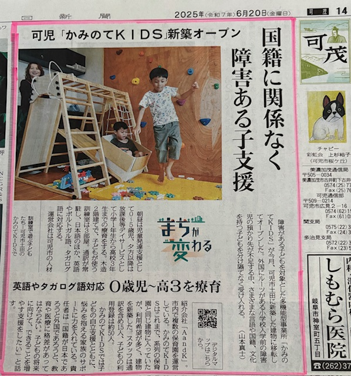
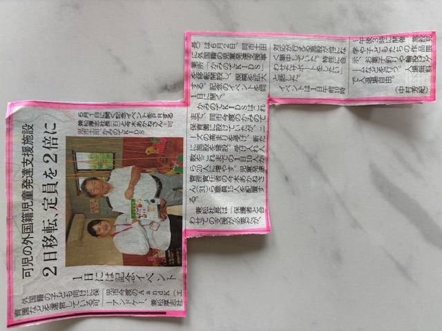
弊社運営の児童発達支援・放課後デイサービス「かみのてKIDS」が新築移転しました。
中日新聞と岐阜新聞に掲載されました。
今後、療育の必要な児童の受け入れ人数を増やしていきます。
場所 可児市土田2569-2
連絡先 0574-66-3513


弊社運営のハンズオブガッド今渡保育園の卒園式を3月22日（土）可児市アーラにて行いました。
今年度の卒園児は21名です。
フィリピン国籍、ブラジル国籍の外国にルーツがある園児です。
4月からは日本の小学校に入学します。
日本語もしっかり勉強したので頑張って小学校に通ってください。
今回、お忙しいところお祝いのお言葉に来て頂きました冨田可児市長様ありがとうございました。
また今渡北小学校の片田教頭、伊左治先生、岐阜県警本部の原田警部補、タンポポ班の皆様にも感謝しております。
弊社は、これからも外国人の住民が地域の一員として暮らしていけるように多文化共生社会に貢献していきます。
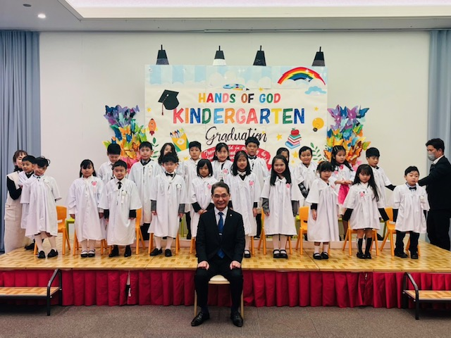
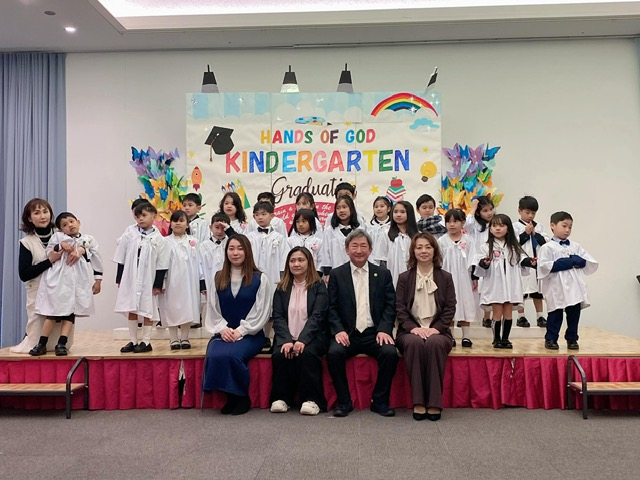
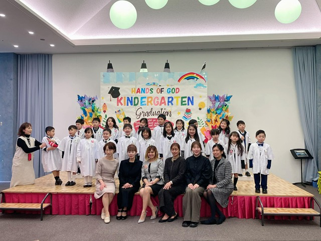
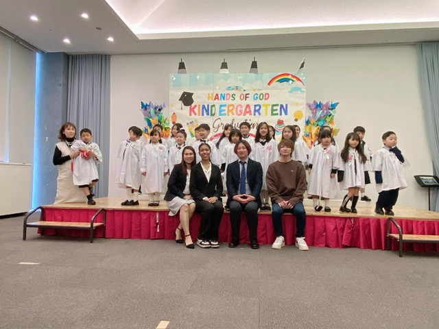
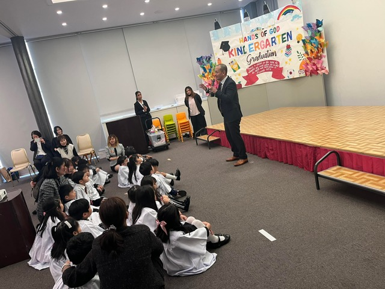
新施設の地鎮祭を執り行いました。
弊社運営の児童発達支援・放課後等デイサービス事業「かみのてKIDS」を新築する建物に移転します。
移転後は利用者増加のため建物内に事業所を増設します。
開校は令和7年6月2日（月）です。
弊社の施設では支援が必要な外国籍の児童も通訳を通じて療育をします。
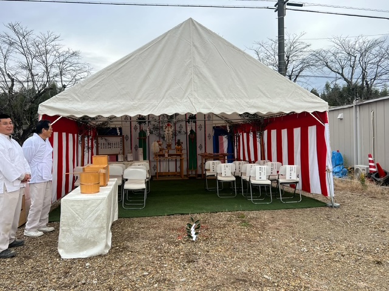
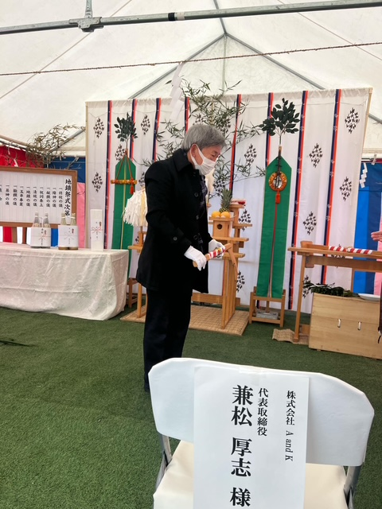
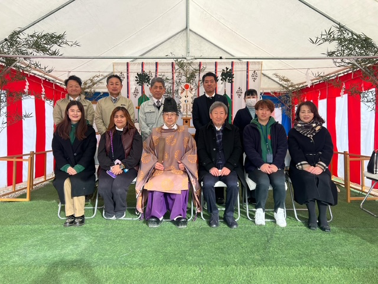
弊社運営のハンズオブガッド今渡保育園の年長クラスの卒園式を3
月24日（日）に
可児市アーラにて行いました。
今年度の卒園児は26名です。
フィリピン国籍、ブラジル国籍の外国にルーツがある園児の中で今
年は日本国籍の園児が1名含まれています。
この環境の中で1名の日本国籍の園児は3年間保育園で他の園児た
ちが話す英語、タガログ語、ポルトガル語を
しっかりと理解出来るようになりました。
外国籍の子供たちは日本語を学び、4月からは日本の小学校でたく
さんの日本の子供と友達になれるでしょう。
卒園おめでとうございました。
弊社のスタッフもお疲れさまでした。
また4月から新しい園児を迎えて頑張りましょう。
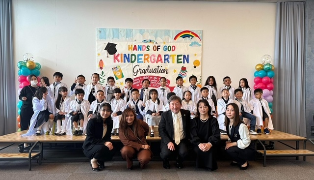
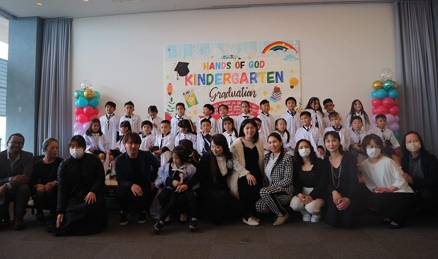
2023年10月2日（月）可児市小規模認可保育園「かみのて今
渡保育園」と児童発達・放課後デイサービス「かみのてKIDS」
を開園しました。
オープニングセレモニーには金子俊平衆議院議員のほか冨田可児市
長や市議会議員の方々のに参加して頂きオープニングセレモニーを
開催しました。
今後も地域の子育て支援に協力をして行きます。
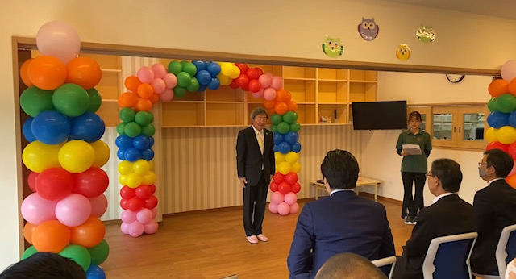
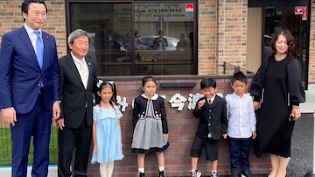
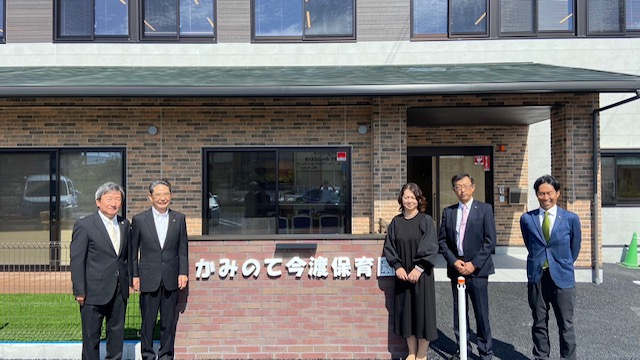
2023年5月13日（土）弊社の新社屋建設の地鎮祭を執り行いました。
多くの方に参加して頂き、工事の安全と無事完成を祈りました。
今回の新社屋には、1階には弊社事務所と小規模認可保育園を2階には児童発達・放課
後デイと一時預かり事業を開設します。
地域の子育て支援に貢献できるように努めていきます。
完成予定は9月末です。
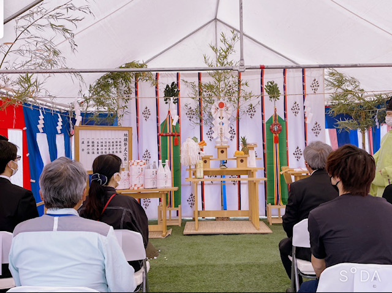
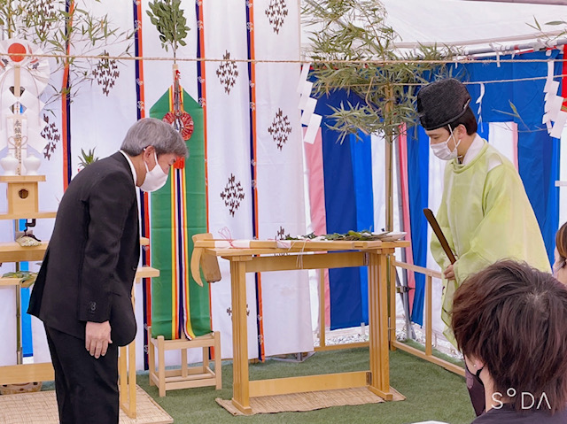
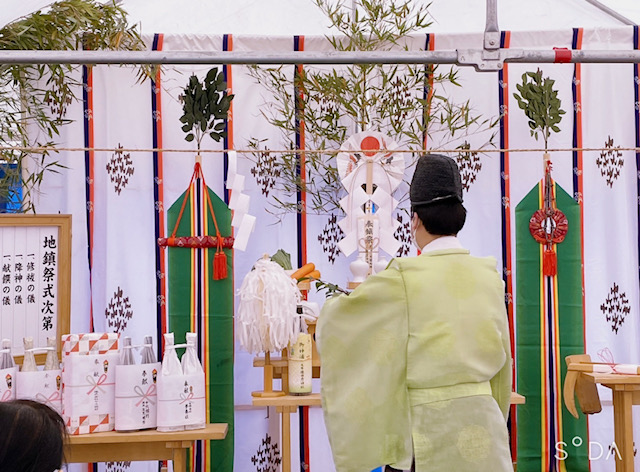
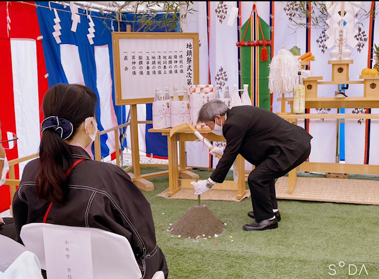
弊社では新しく開校（2023年夏予定）する児童発達支援・放課後デイサービスで一緒に施設を立ち上げて下さる児童発達支援管理責任者資格を有する方を募集します。
弊社のホームページのお問い合わせからメールを頂ければ、後日弊社より詳細をメールにて連絡します。
2022年10月23日よりフィリピンに出張しました。新しくフ
ィリピン国内の送り出し機関「プロデンシャルエンプロイメントエ
ージェンシー」と契約をしました。
このエージェンシーは経営者が日本人であり現
在はフィリピン国内最大で約2500名の技能実習生を日本に送っ
ています。
技能実習ビザ・特定技能ビザの介護人材にも力を入れています。
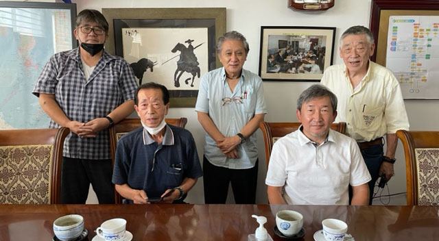
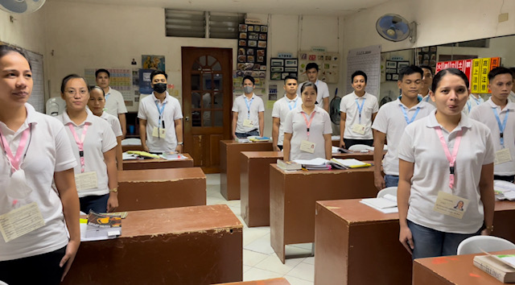
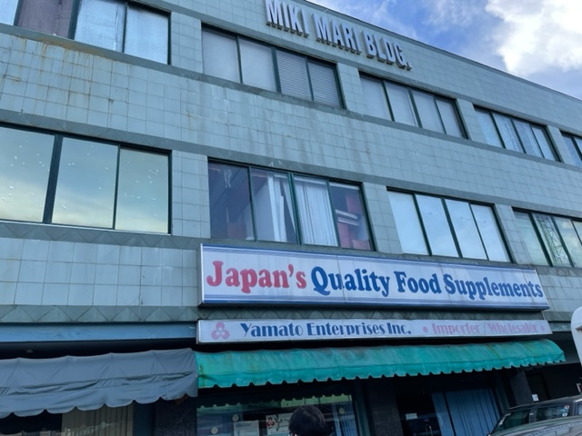
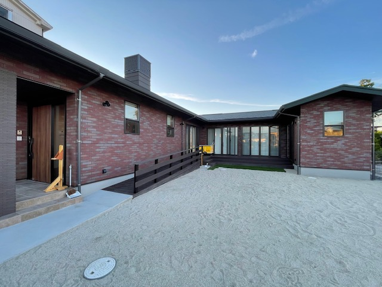
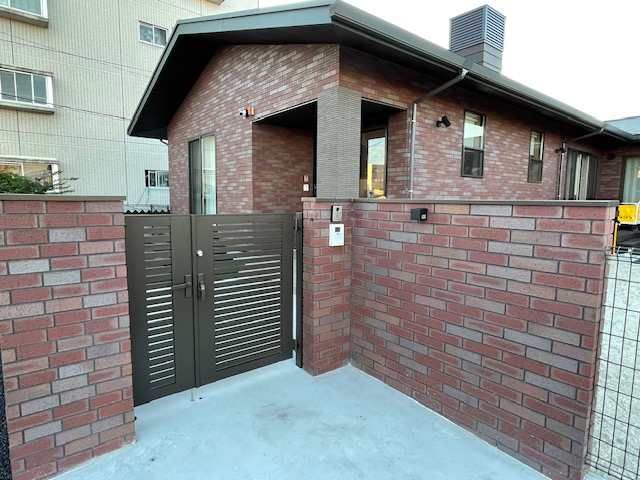
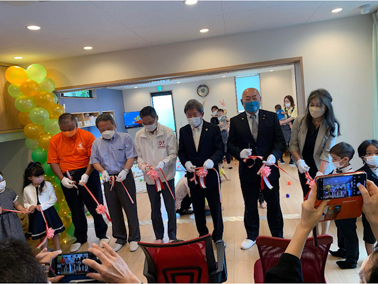
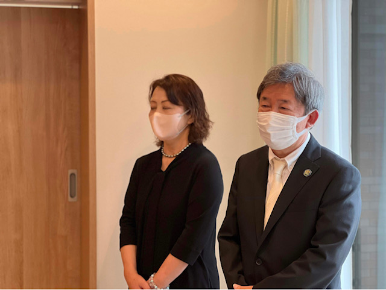
7月4日（月）に弊社運営のこども家庭庁所管企業主導型保
育事業「かみのて保育園」が開園しました。
冨田可児市長のほか近隣の市議会議員も参加して頂きオープニングのテープカットを行いました。
その模様が中日新聞・岐阜新聞に掲載されました。
弊社はこれからも多文化共生事業に貢献していきます。
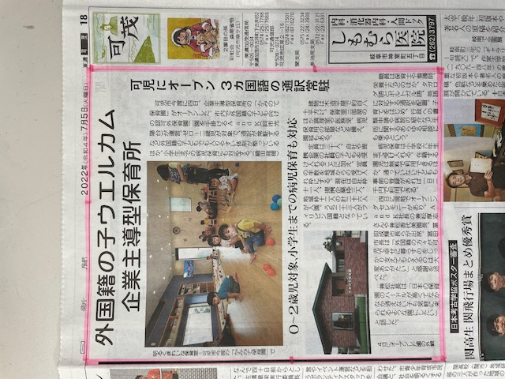
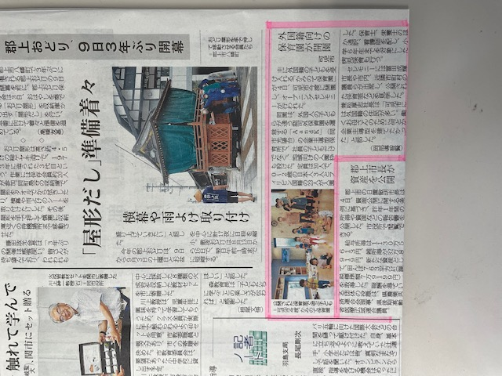
可児市文化センターAlaにて弊社経営のハンズオブガッド保育園の卒園式を行いました。
外国にルーツのある児童25名が卒園しました。
4月からランドセルを背負って小学校に通学する姿が楽しみです。
今回の卒園式の様子を中日新聞社様・岐阜新聞社様紙面に掲載していただきました。
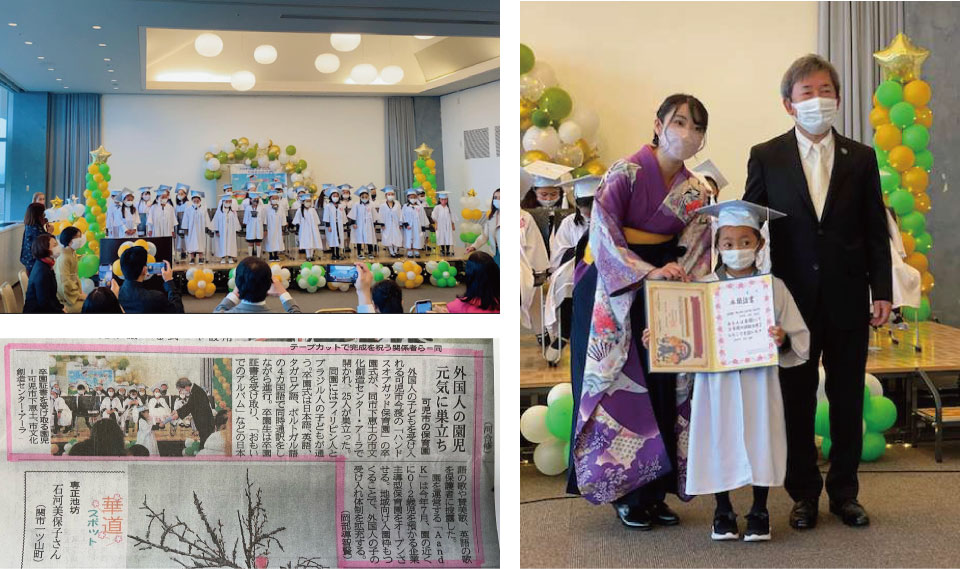
弊社は2022年7月に内閣府所管事業 企業主導型保育施設かみのて保育園をオープンします。
2月5日に地鎮祭を行い、現在岐阜県可児市今渡で工事着工しています。
オープンにつきスタッフを募集します。
保育士・看護師資格を所有の方のご応募をお待ちしています。
応募方法はかみのて保育園ホームページ
HP:
https://www.kaminote-hoikuen.
com
またはQRコードから
>> 過去のお知らせはこちら
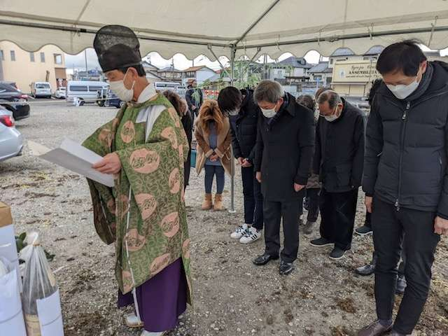
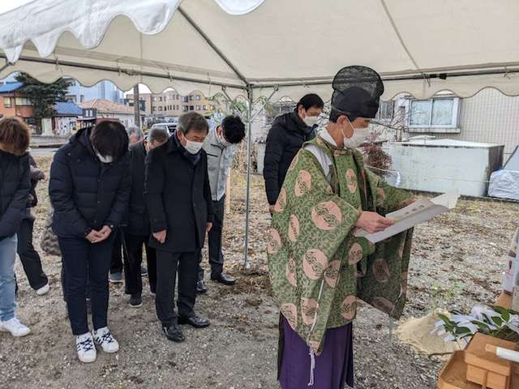
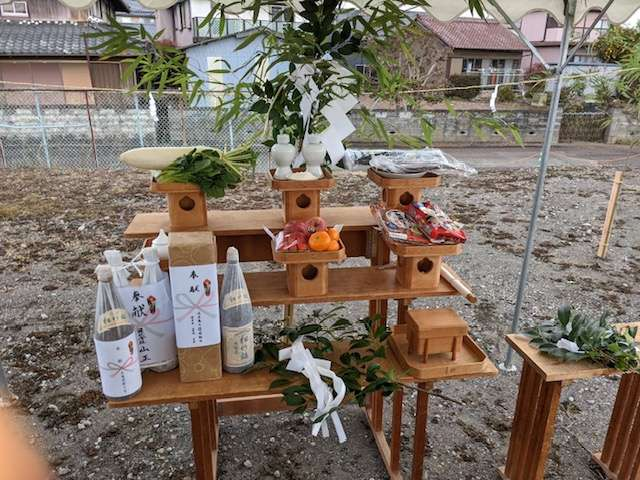
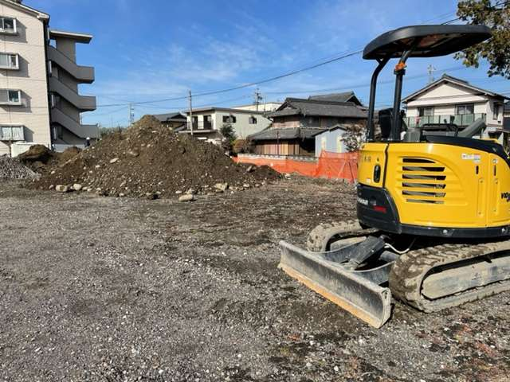
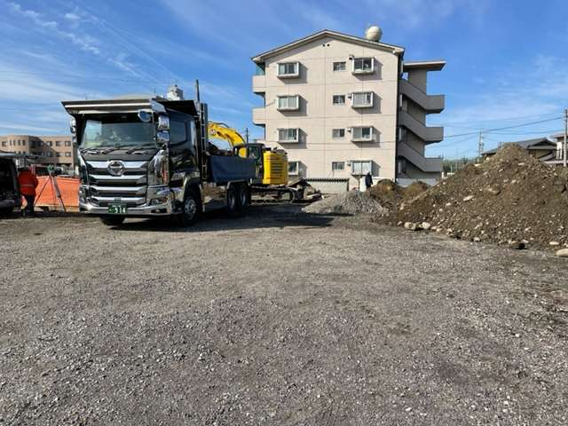
令和3年8月30日に弊社設立のブリッジング協同組合はベトナム
国内の送り出し機関POLIMEX国際人材株式会社と業務提携を
しました。
今後は企業様にベトナム国内からスムーズに技能実習生
を紹介します。
令和3年8月2日に中小企業協同組合法により、愛知県知事の許可を受けてブリッジング協同組合を設立しました。
今後は外国人技能実習生受入事業を事業目的に加えベトナム・フィリピン・カンボジア・インドネシア・タイから技能実習生受入を開始していきます。
HANDS OF GOD保育園の卒園式を行いました。
コロナ禍で感染予防対策をしっかりして無事27名の卒園式を終え
ました。
園児たちがランドセルを背負って小学校に通う姿が楽しみです。
卒園式の記事が中日新聞と岐阜新聞に掲載されました。
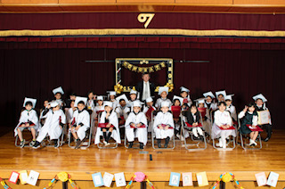
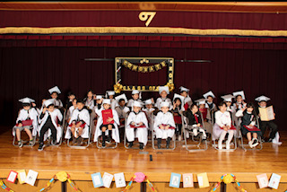
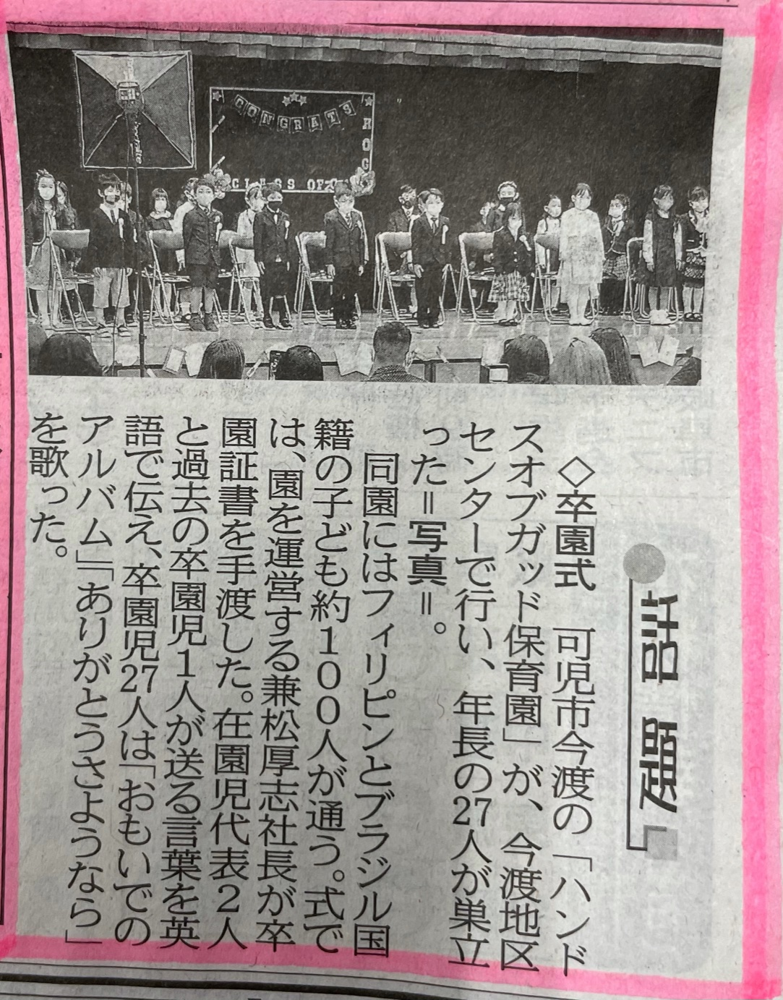
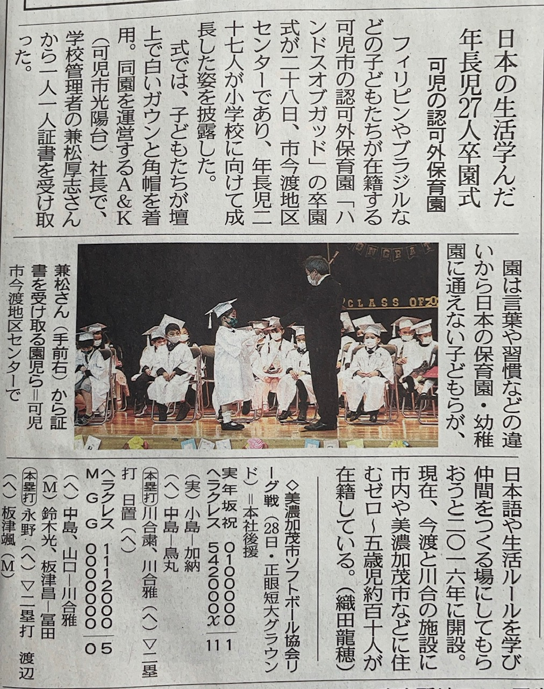
この度、弊社が経営している外国人児童の保育園「「ハンドス・オブ・ガッド（Hands of God）」にトイレと洗面所を増設すべく、クラウドファンディングに挑戦します。
https://readyfor.jp/projects/handsofgod
保育園は認可外のため、国からの助成金が少なく、施設の設備が十分ではありません。また認可保育園に比べ保育料も高く、親御さんへの負担も大きくなっています。
今回、認可保育園として運営することを目指し、第一歩としてトイレと洗面所を増設したいと思っています。コロナ感染の影響もあり、手洗いやうがいの頻度を増やすことは急務だと考えており、皆様からいただいた支援で、できるだけ早く増設をしたいと考えています。
ページをご覧いただき、是非、保育園を助けていただきたく、
ご支援をいただければ幸いです。
よろしくお願いいたします。
https://readyfor.jp/projects/handsofgod
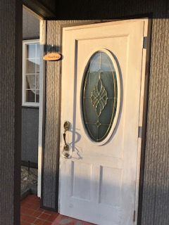
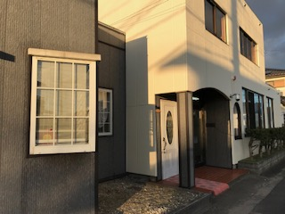
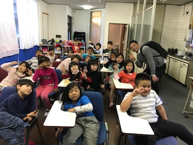
弊社事業の認可外保育園ハンドスオブガッドの卒園式を行いました。
年長児24名が卒園して4月から小学校に入学して日本の子供たちと同じ教室で学びます。
言葉にまだ不安がある子供もいますが元気に頑張ってください。
ここまで成長させてくれたスタッフ（先生）さんもお疲れさまでした。
この模様が中日新聞にも掲載されました。
今後も弊社では外国人との多文化共生事業を進めていきます。
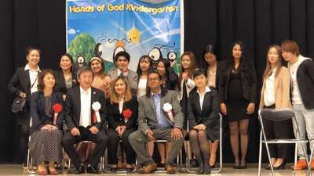
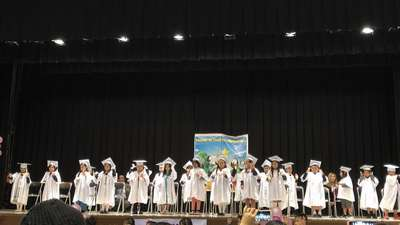
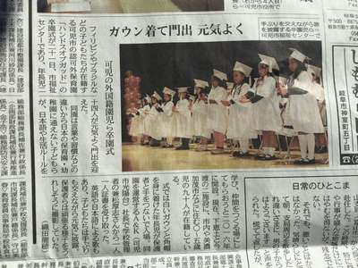
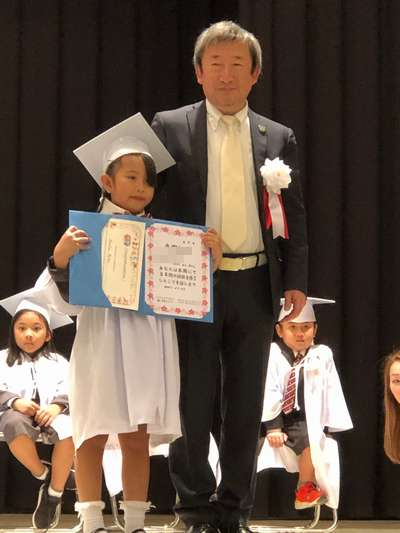
1月13日から16日までベトナムに行きました。
今回は内装工事の社長をお連れして実習生の面接です。
面接では、日本で家族のために一生懸命働くことを誓った実習生の気持ちが伝わってきました。
今回は2名の実習生を採用しました。
彼らはベトナムで3か月間の日本語研修を行った後、日本に来ます。
建築関連の事業の方で人材不足でお困りの方は、ぜひお問い合わせください。
迅速に実習生をご紹介します。
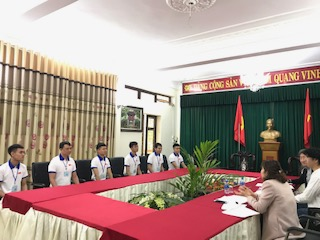
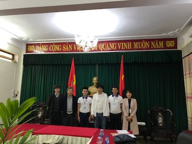
2019/12/9より、岐阜県可児市今渡1149-1に事務所を開設しました。
名鉄日本ライン今渡駅より徒歩10分の場所です。
人出不足でお悩みの企業・介護事業所様に外国人材を紹介します。
是非お立ち寄りください。
1Fには外国人の認可外保育園があります。
外国国籍の子供たちが元気に日本の言葉や文化・習慣を身に着けて、日本の小学校に入学していきます。
見学も可能です。
10月1日から6日までフィリピンへ出張に行きました。
今回は江南市にある弊社提携のトラスト江南協同組合様の理事長をお連れして、フィリピン送り出し機関のYWAとの委託契約です。
無事契約が締結され、今後はフィリピンからの技能実習生を受け入れる事が出来ます。
フィリピン実習生には、今後建築分野や介護分野で頑張ってもらいたいです。
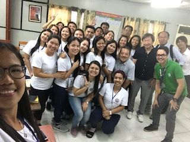
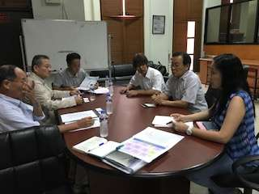
犬山商工会議所にて外国人人材セミナーを開催します。
外国人技能実習生の受け入れをお考えの企業・介護施設の関係者の方は是非参加してください。
参加要領は下記をダウンロードしてください。
出席の方はホームページの
お問い合わせ
から出席の連絡をして下さい。
・
外国人材介護セミナーのご案内（PDF）
・
外国人材セミナーのご案内（PDF）
弊社は技能実習生受入監理団体である
トラスト江南協同組合
と業務提携をしました。
今後は愛知・岐阜・三重の中小企業様や介護施設様に技能実習生をご紹介することが出来ます。
人材不足にお困りの企業・介護関係者の方は是非ご相談ください。
7月17日～25日、フィリピンに出張してきました。
日本から視察にお越しの方々に、フィリピンの送り出し機関を訪問してもらいました。
日本行きが決まった若者が、夢を抱いて日本語教育を頑張っていました。
いよいよ始まる看護の実習生の勉強は一段と高い内容で教育をされていました。
もう一つはカビテ州イムス市長（赤シャツ）、副市長と面談です。
イムス市はまもなく人口50万人になる大都市です。
しかし、若者の雇用が思うようになりません。
日本企業とタイアップして、日本に就労できないかのミーティングを行いました。
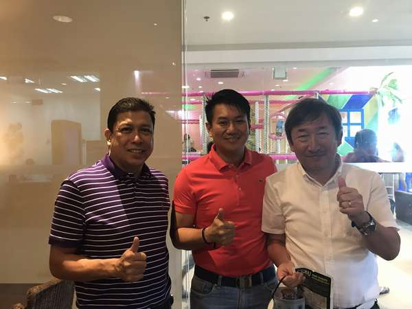
弊社、株式会社AandKは、出入国在留管理庁長官より登録支援機関登録通知書が届きました。
これにより弊社は特定技能ビザにより外国人材雇用をお考えの企業様の支援計画の作成・実施を行うことができます。
特定技能ビザについて、ご不明な場合はお問い合わせください。
3月2日～12日、フィリピンに行き、TESDA（職業訓練庁）を訪問してきました。
ここは、いろいろな技術を学ぶ国の公の機関です。
この機関の養成講座を修了すると、技能習得修了書を発行してもらえます。
新在留資格ビザで、日本での就労を希望する若者が、真剣に取り組んでいました。
ご相談・お見積りは無料です。制度の説明だけでも承ります。